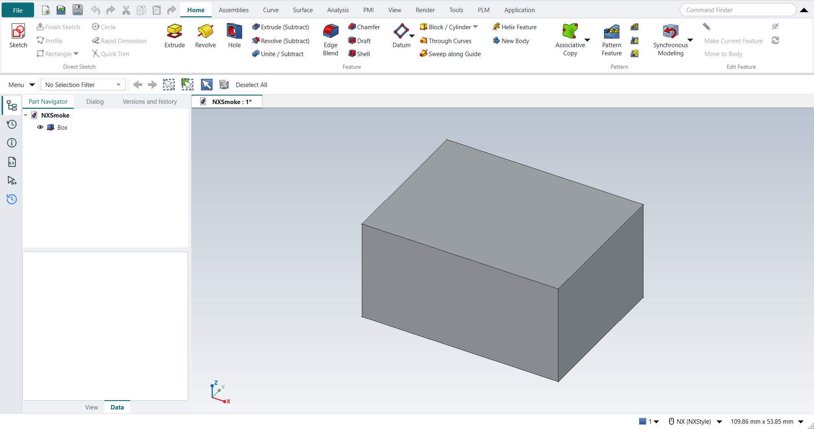
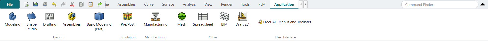
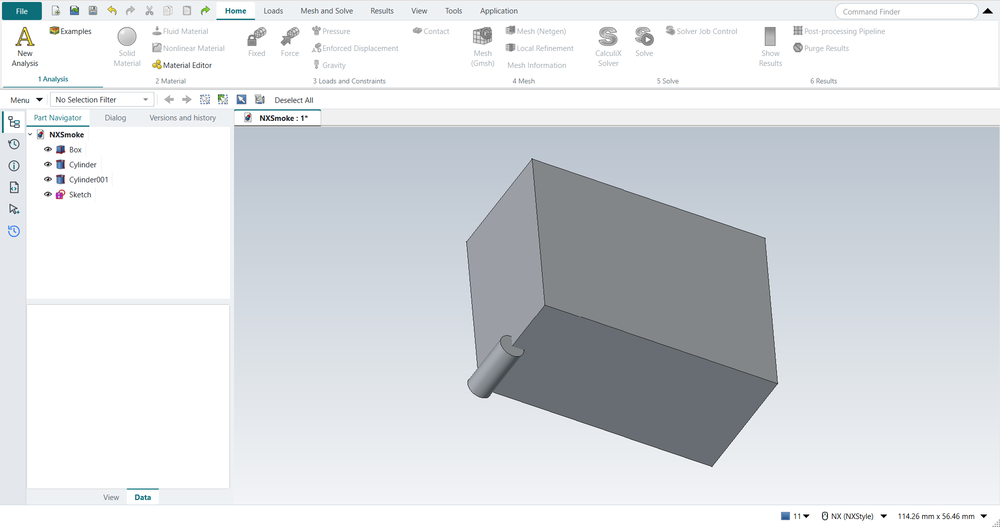
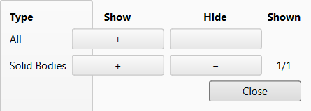

The user interface

The window follows NX’s layout:
-
the ribbon across the top, with the File button, the Quick Access Toolbar and the Command Finder;
-
the Top Border Bar under it;
-
the Resource Bar down the left edge, with the navigators beside it;
-
the graphics window in the middle, with document tabs above it and the view triad in its lower-left corner;
-
the cue line along the bottom.
Ribbon
The ribbon has NX’s tabs and groups. In the Modeling application they are Home, Assemblies, Curve, Surface, Analysis, View, Render, Tools, PLM and Application. Each button carries NX’s name and runs FreeCAD’s real command; hover a button to see the FreeCAD command’s name and its key. NX command to FreeCAD command lists every button with the FreeCAD command behind it.
-
File (the teal button on the left) opens FreeCAD’s File menu, with Preferences and Customize.
-
Contextual tabs appear when they apply: editing a sketch adds the Sketch tab in front (see Sketching).
-
Application switches between the NX applications. The ribbon changes to the application’s tabs.
-
Buttons that need a selection are greyed out until you select something suitable.
To see FreeCAD’s own names on the buttons (Pad, Pocket, Fillet …), set "labels": "freecad" in the settings.
|
A narrow window
The reference is NX 2212’s ribbon: tabs whose groups collapse into a single group button when the window narrows. Designcenter’s application clusters are not imitated. The order in which groups give up room, the More menu and the sizes are NX-Style’s own and have not yet been compared with NX 2212 itself.
The ribbon fits the window instead of running off its edge. When a tab’s groups do not fit, they give up room in three stages:
-
Compact: the small buttons show only their icon. The name stays in the tooltip.
-
Collapsed: the group becomes a single button with the group’s name. Click it, or press Space when it has the focus, for a menu of the group’s commands.
-
More: the group moves into the More menu at the right end of the ribbon.
The groups holding an application’s main commands give up room last: in Modeling, the groups with Sketch, Extrude, Revolve, Hole, Edge Blend, Chamfer, Pattern Feature, Edit Parameters and the assembly commands. All the other groups are compacted and then collapsed before one of these loses a label. Among groups of equal importance, all of them are compacted before any collapses, starting with the rightmost; the More menu comes last. Every command therefore stays at most two clicks away, at any window size and display scaling.
Right-click a group to choose how it behaves:
-
Automatic: as above.
-
Keep Expanded: the group gives up room only after all the others.
-
Always Collapsed: the group stays a single button even when there is room.
-
Reset Ribbon Layout: back to Automatic everywhere.
These choices are kept for each application, and so is a minimised ribbon (double-click a tab, or the arrow at the right).
They are saved straight away in nxstyle.ribbon.json in the profile’s config folder, so they survive a restart.
When the ribbon is minimised, clicking a tab drops its page down over the graphics window. Running a command, or clicking elsewhere, closes it again. A window less than 420 pixels high (at the display’s scaling, for example 1366x768 at 200 %) minimises the ribbon by itself. The ribbon comes back when the window is taller, and this does not change your saved choice.
In a narrow window the Command Finder gets narrower first. If the tabs still do not fit, arrows at the end of the tab row scroll them, and Quick Access buttons that do not fit move into the toolbar’s » menu.
Applications
An NX application is a FreeCAD workbench behind the scenes. Applications without a hand-made ribbon get one built from their workbench’s toolbars, so every installed workbench is reachable.

| Application | FreeCAD workbench | Key |
|---|---|---|
Modeling (Design) |
|
Ctrl+M |
Shape Studio (Design) |
|
|
Drafting (Design) |
|
Ctrl+Shift+D |
Assemblies (Design) |
|
|
Algorithmic Modeling (Design) |
|
|
Sheet Metal (Design) |
|
Ctrl+Shift+M |
Laser Cut (Design) |
|
|
Basic Modeling (Part) (Design) |
|
|
Pre/Post (Simulation) |
|
|
Manufacturing (Manufacturing) |
|
|
Mesh (Other) |
|
|
Spreadsheet (Other) |
|
|
BIM (Other) |
|
|
Draft 2D (Other) |
|
Pre/Post: a guided analysis
The Pre/Post application (FreeCAD’s FEM workbench) puts an analysis in order on its Home tab. The groups are the steps: 1 Analysis, 2 Material, 3 Loads and Constraints, 4 Mesh, 5 Solve and 6 Results. Each step gets a tick when the active analysis has what it needs, and the next step is underlined in teal:
-
Analysis: an analysis exists;
-
Material: the analysis has a material;
-
Loads and Constraints: it has at least one constraint or load;
-
Mesh: it has a mesh;
-
Solve: it has a solver and results;
-
Results: highlighted once there are results to look at.
The ticks show what the analysis contains. They do not check that the setup is complete or correct, for example that the supports remove every rigid-body motion. The Loads, Mesh and Solve and Results tabs hold the full sets: thermal, electromagnetic and fluid boundary conditions, beam and shell sections, Elmer’s solver and equations, and the post-processing filters.

Quick Access Toolbar and Command Finder
Left of the tabs: New, Open, Save, Undo, Redo, Cut, Copy, Paste and Repeat Command (runs the last command again).
Right of the tabs, the Command Finder searches by NX name and by FreeCAD name, and shows where each command lives on the ribbon. Type part of a name and press Enter to run the first match.
Top Border Bar
-
Menu opens every FreeCAD menu (File, Edit, View, Tools, Macro, Windows, Help and the workbench’s own).
-
The Type Filter (No Selection Filter, Curve, Datums, Edge, Face, Feature, Point, Sketch, Solid Body) restricts what you can pick in the graphics window, as in NX.
-
The Selection Scope (Entire Assembly, Within Work Part and Components, Within Work Part Only) limits picks to the work part. See Selecting.
-
Previous Selection, Next Selection, Rectangle selection, Select All, Find in Navigator and Deselect All.
Resource Bar and navigators
The vertical bar on the left opens the panels; the open ones share one tab strip.
| Button | Panel |
|---|---|
Part Navigator |
The model tree: features in order, with their names. F2 renames; MB3 has the object menu. Above the tree: the work part, the active body, suppressed and failed features, and what is selected (selection.adoc#_part_navigator_status). With FreeCAD-Nxt on, the Part Navigator is Nxt’s tree, with a rollback bar and NX’s Dependencies and Details panels. |
History |
Recently opened parts; double-click one to open it. |
Information |
FreeCAD’s report view: messages, warnings, the output of Object Information (Ctrl+I) and Measure Bodies. |
Journal (Python) |
FreeCAD’s Python console. |
Selection |
What is selected, with sub-elements. |
Versions and history |
Strata's panel: every save, versions, workspaces. |
Panels in one strip share a height, so Strata’s Versions and history panel scrolls when the window is short. Otherwise it would keep the whole window at least 628 pixels high, more than fits on a 1366x768 screen at 125 %.
The Dialog tab holds the open feature dialog (FreeCAD’s task panel). When no dialog is open, NX-Style brings the Part Navigator back to the front, also after you switch applications.
Graphics window
-
Light-grey gradient background, as in NX. View › Style › Background offers NX’s five presets.
-
Red preselection, orange selection, grey bodies with dark edges.
-
The view triad sits in the lower-left corner; there is no view cube. FreeCAD’s Navigation Cube (File › Preferences › Display › Navigation) switches it on, and it stays on after a restart.
-
Document tabs are above the window.

Cue line
The bottom-left of the window tells you what the current tool expects, like NX’s cue line: for example "Sketch: choose a curve or constraint tool, or select curves. Ctrl+Q = Finish Sketch". When a pick is refused it says why, in red (selection.adoc#_why_a_pick_is_refused).
Show and Hide
Ctrl+W opens the Show and Hide panel: show or hide all objects of one type with one click.

Ctrl+B (Hide) hides the selected objects, and Ctrl+Shift+K (Show) shows them again. A hidden object cannot be picked in the graphics window, so select it in the Part Navigator. With nothing selected, Show opens a list of the hidden objects: pick them and click OK, which is one undo step. In NX the hidden objects appear in the graphics window to be picked. Both keys work at once after a pick. Ctrl+Shift+U (Show All) shows everything; Ctrl+Shift+B swaps shown and hidden.
Touch Mode and FreeCAD’s own interface
-
F4 toggles Touch Mode: larger ribbon and bar icons.
-
Tools › FreeCAD Menus and Toolbars brings back FreeCAD’s own menu bar and toolbars at any time; the same button hides them again.
Look and theme
NX-Style layers one light theme over FreeCAD’s own FreeCAD Light stylesheet: a single teal accent with its tints, line icons on the Resource Bar, the left panels in one tab strip, and the document tabs above the graphics window.
Every colour of the theme is a token defined once in NXStyle/nxstyle/theme.py.
The stylesheets (nx_theme.qss, ribbon.qss) name a token as @nx-accent, @nx-chrome and so on, and the Python code reads the same table.
Set "theme": "none" in the settings to keep FreeCAD’s look.